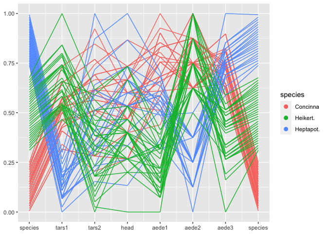
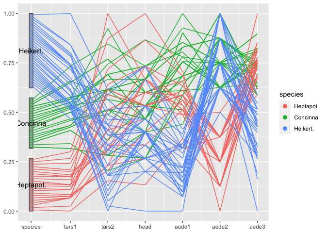
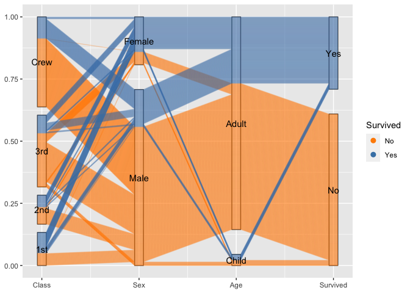
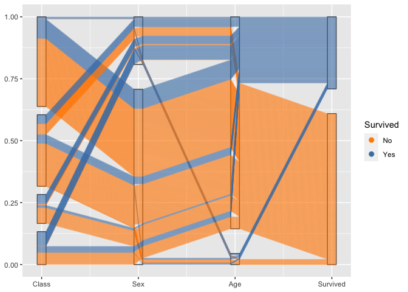
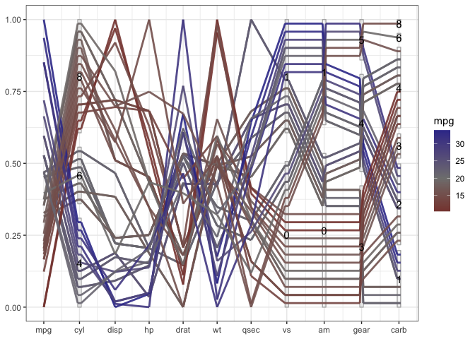
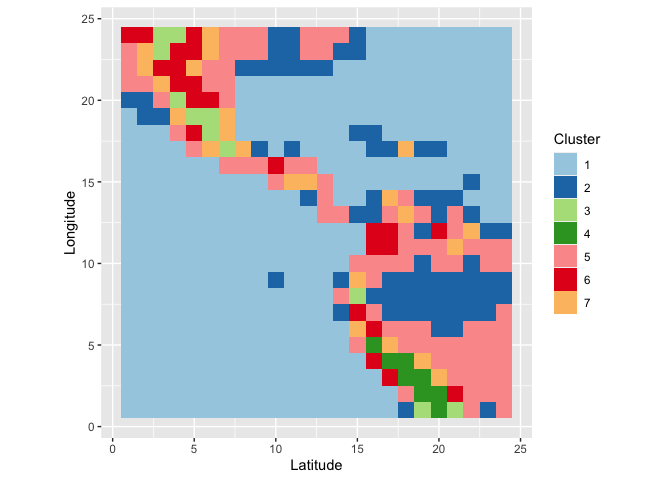
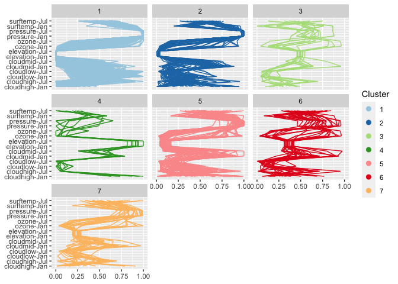
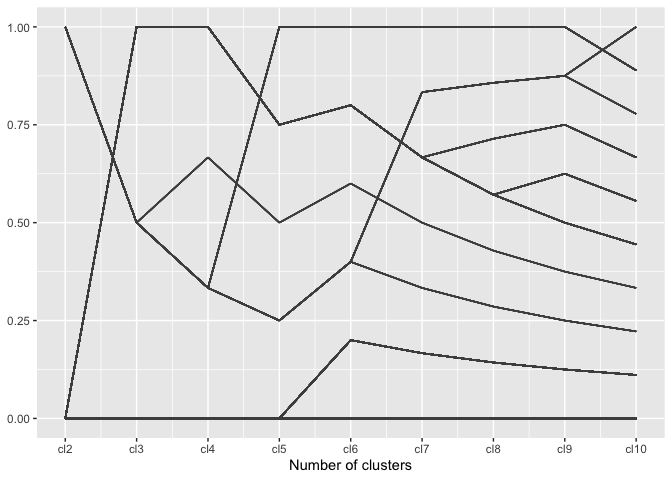
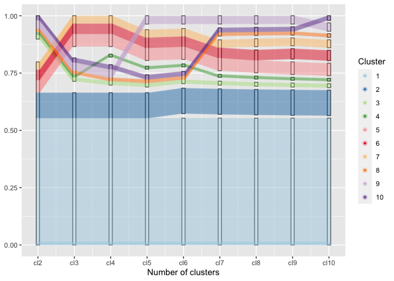

Generalized parallel coordinate plots with ggpcp
R package for creating generalized parallel coordinate plots in the ggplot2 framework
Installation
ggpcp is available from Github:
# install.packages("devtools")
devtools::install_github("yaweige/ggpcp", build_vignettes = TRUE)Getting Started
Load the library
Load a dataset
A first parallel coordinate plot
The two main arguments for drawing a parallel coordinate plot are the aesthetic vars and the parameter method.
With the aesthetic vars all variables are specified that are supposed to go into the parallel coordinate plot. The specification uses the dplyr function vars with the corresponding selectors.
You can specify variables by
- position, e.g.
1:4, 7, 5, 4, - name, e.g.
class,age,sex,aede1:aede3or - selector, e.g.
starts_with("aede"), see?tidyselect::select_helpers
or any combination thereof. Variables can be selected multiple times and will then show up multiple times in the plot.
method is a character string that determines the method to be used when transforming the values of each variable into a common y axis. By default, the method uniminmax is chosen, which univariately scales each variable into a range of [0,1] with a minimum at 0 and the maximum at 1. ‘?transform_pcp’ gives more details.
flea %>%
ggplot(aes(colour = species)) +
geom_pcp(aes(vars=vars(species, 2:7, species)))
Note that the variable species shows up twice in the plot - once as the rightmost variables, once as the leftmost one. species is a categorical variable. ggpcp deals with categorical variables by using the space on the y axis of a categorical variable to spread points out evenly. This allows us to (a) estimate the frequency of each level, and (b) track individual points through the parallel coordinate plot even in the presence of categorical variables.
The layer approach
ggpcp implements several geoms to work in a parallel coordinate plot setting
-
geom_pcpis a wrapper for the standard layer of drawing line segments for each observation across the specified variables -
geom_pcp_boxdraws rectangles framing each level of a categorical variable. The parameterboxwidthspecifies the width of these rectangles (1 is the width between successive variables).boxwidthis set to 0 by default. -
geom_pcp_textplaces a label center on each rectangle of a categorical variable. The familiar parametersnudge_xandnudge_ywork as usual to move labels. - … add as more geoms become available
flea %>%
mutate(species = factor(species, levels = c("Heptapot.", "Concinna", "Heikert."))) %>%
ggplot(aes(vars = vars(1:7))) +
geom_pcp_box(boxwidth = 0.1, fill="grey70") +
geom_pcp(aes(colour=species), boxwidth = 0.1) +
geom_pcp_text(boxwidth = 0.1)
Another look at the Titanic Data
For categorical variables ggpcp presents a result similar to parsets by Kosara et al (2013).
titanic <- as.data.frame(Titanic)
titanic <- titanic %>%
purrr::map(.f = function(x) rep(x, titanic$Freq)) %>%
as.data.frame() %>% select(-Freq)
titanic %>%
ggplot(aes(vars=vars(1:4))) +
geom_pcp_box(boxwidth=0.1) +
geom_pcp(aes(colour = Survived), alpha = 0.1, boxwidth=0.1) +
scale_colour_manual(values=c("darkorange", "steelblue")) +
guides(colour=guide_legend(override.aes = list(alpha=1))) +
geom_pcp_text(boxwidth=0.1) 
By setting break points between blocks of categorical variables, we can focus on the two-dimensional relationship between variables on adjacent axes:
titanic %>%
ggplot(aes(vars = vars(1:4))) +
geom_pcp(aes(colour = Survived), alpha = 0.1, resort=2:3) +
scale_colour_manual(values=c("darkorange", "steelblue")) +
guides(colour=guide_legend(override.aes = list(alpha=1))) To combine the option of tracking individuals with the focus on 2d relationships between axes, we introduce a box for each axis to allow the tracking. For the thousands of people on board the Titanic individual tracking is tricky, but with good eyesight and a large screen still manageable :)
titanic %>%
ggplot(aes(vars=vars(1:4))) +
geom_pcp_box(boxwidth=0.1, fill=NA) +
geom_pcp(aes(colour = Survived), alpha = 0.1,
boxwidth=0.1, resort=2:3) +
scale_colour_manual(values=c("darkorange", "steelblue")) +
guides(colour=guide_legend(override.aes = list(alpha=1))) 
Mixed data: categorical and numeric variables
The mtcars data is terribly old, but serves a good purpose here. All of the variables are coded as numeric variables, even when they should, in fact, be factor variables. In a standard parallel coordinate plot we get the usual uninformative fishnet between categorical variables such as vs, am, and gear, also visible for variable cyl:
Once the variables are coded properly as factor variables, we get a much more informative view with a generalized parallel coordinate plot:
mtcars %>%
mutate(cyl = factor(cyl),
vs = factor(vs),
am = factor(am),
gear=factor(gear),
carb = factor(carb)) %>%
ggplot(aes(vars = vars(1:ncol(mtcars)))) +
geom_pcp_box(boxwidth=0.1, fill=NA, colour="grey70") +
geom_pcp(aes(colour = mpg), boxwidth=0.1, resort=9:10, size=1, alpha =0.9) +
geom_pcp_text(boxwidth=0.1) +
scale_colour_gradient2("mpg", mid="grey50", midpoint = 20) +
theme_bw()
What becomes obvious in this plot, is that fuel consumption of each car measured in miles per gallons (mpg), encoded as the first variable in the plot and as color of the lines - is correlated strongly with all of the variables, not just the numeric variables. A large number of cylinders (cyl), a V-shaped engine (vs = 0), an automatic transmission (am = 0), a low number of forward gears and a high number of carburetors are related to a low value of mpg (red lines).
Bigger Example
One application for generalized parallel coordinate plots is their use for visualizing clusters.
data(nasa, package="ggpcp")The nasa data, made available as part of the ggpcp package provides and extension to the data provided in the GGally package, was used in the 2006 ASA Expo. It consists of monthly measurements of several climate variables, such as cloud coverage, temperature, pressure, and ozone values, captured on a 24x24 grid across Central America between 1995 and 2000.
We grouped locations using all January and July measurements of all climate variables using a hierarchical clustering based on Ward’s distance. The resulting clusters can then be summarized visually. What we see is that the clusters have a very distinct geographic pattern (tile plot).
## `summarise()` has grouped output by 'id', 'variable'. You can override using the `.groups` argument.
wide %>% separate(id, into=c("y", "x"), remove = FALSE) %>%
mutate(x = as.numeric(x), y = as.numeric(y)) %>%
ggplot(aes(x = x, y=y, fill=factor(cl7))) +
geom_tile() + scale_fill_brewer("Cluster", palette = "Paired") +
xlab("Latitude") + ylab("Longitude") +
coord_equal()
From the parallel coordinate plot we see that cloud coverage in low, medium and high altitude distinguishes quite succinctly between some of the clusters. (Relative) temperatures in January (1) and July (7) are very indicative to separate between clusters on the Southern and Northern hemisphere.
wide %>%
ggplot(aes(vars=vars(95:108))) +
geom_pcp(aes(colour=factor(cl7))) + facet_wrap(~cl7) +
coord_flip() + scale_colour_brewer("Cluster", palette = "Paired")
Visualizing the cluster process
Needs more words …
A regular parallel coordinate plot allows us to visualize a part of the dendrogram corresponding to the hierarchical clustering.
wide %>%
ggplot(aes(vars=vars(86:94))) +
geom_pcp() +
xlab("Number of clusters")
Using the generalized parallel coordinate plots we can visualize the clustering process in plots similar to what Schonlau (2002, 2004) coined the clustergram:
wide %>%
mutate(
cl2 = factor(cl2),
cl3 = factor(cl3),
cl4 = factor(cl4),
cl5 = factor(cl5),
cl6 = factor(cl6),
cl7 = factor(cl7),
cl8 = factor(cl8),
cl9 = factor(cl9),
cl10 = factor(cl10)
) %>%
ggplot(aes(vars=vars(86:94), colour = factor(cl10))) +
geom_pcp_box(boxwidth=0.1) +
geom_pcp(alpha = 0.25, boxwidth=0.1) +
xlab("Number of clusters") +
scale_colour_brewer("Cluster", palette="Paired")
Along the x-axis the number of clusters are plotted with one pcp axis each, from two clusters (left) to 10 clusters (right most pcp axis). Each observation is drawn as a multi-segmented line and colored by its assignment in the ten-cluster solution. This gives an excerpt of the dendrogram that allows an assessment of the number of observations in each cluster as well as the relationship between successive clustering steps.